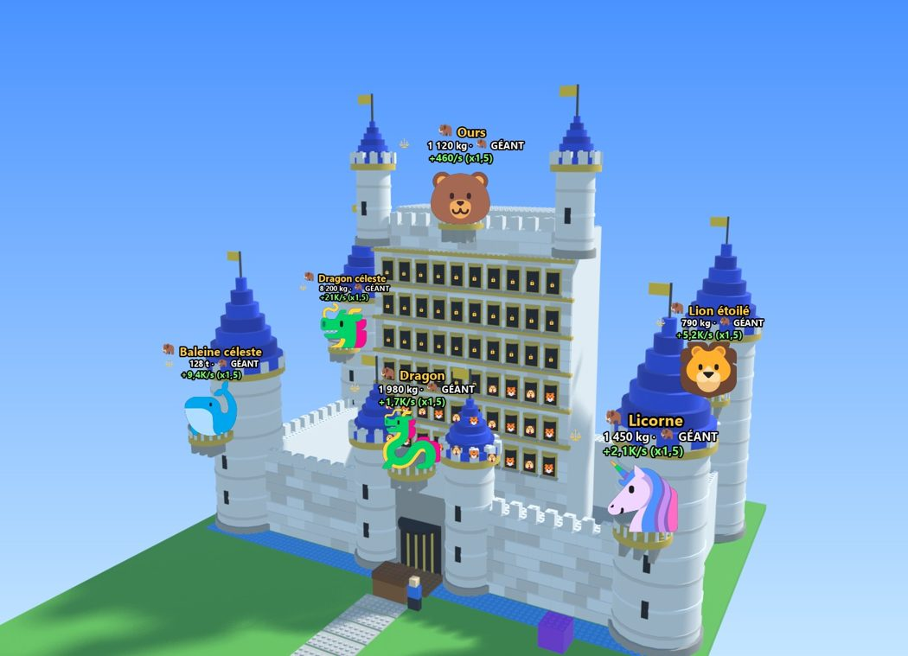
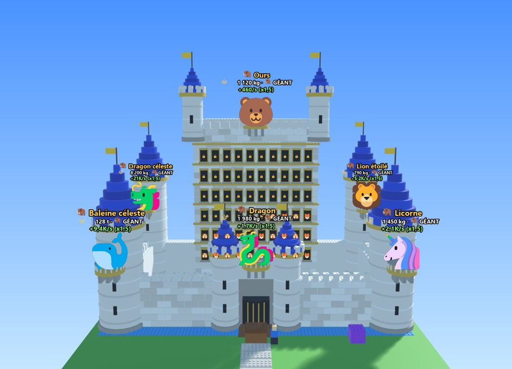
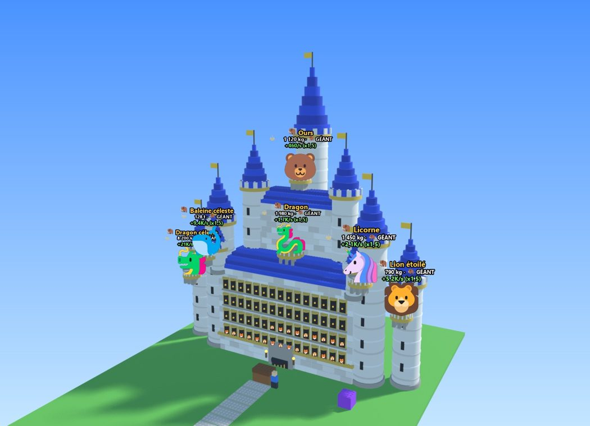
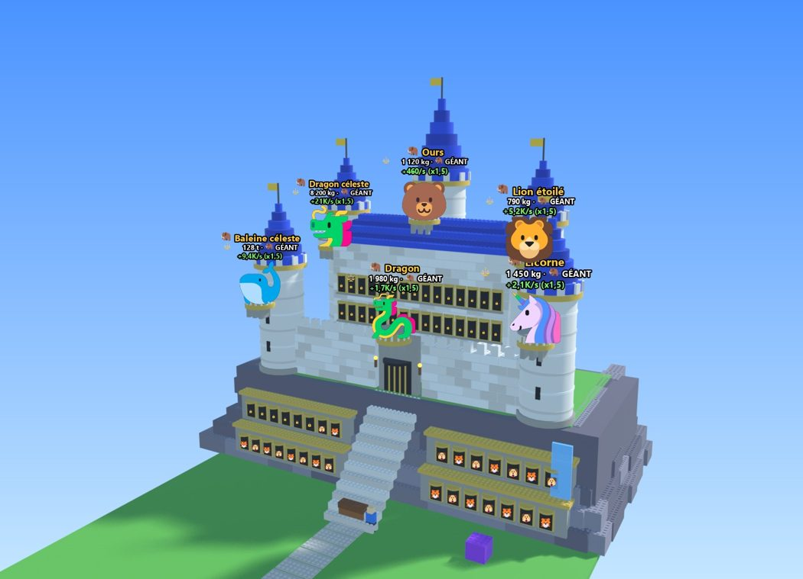
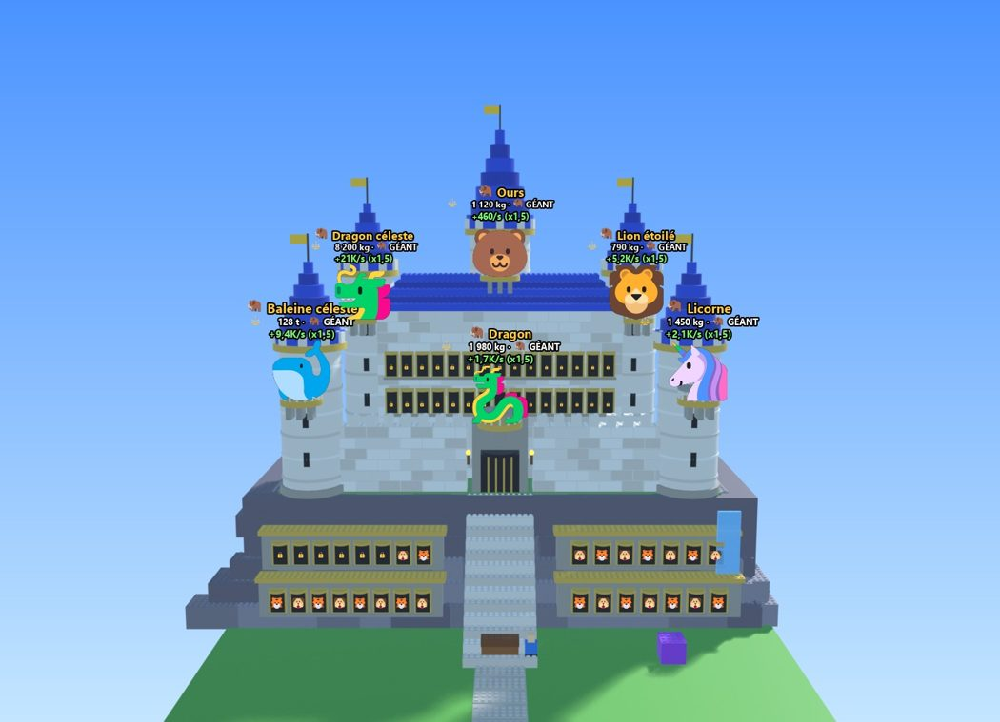

🏰 Trois styles de château, au choix
Ce sont des maquettes en vrai 3D, avec les mêmes pièces Roblox (picots compris) que le jeu, rendues avec le soleil et les ombres. Elles ne sont pas encore dans le jeu. Pour que tu compares seulement les formes, les trois ont les mêmes couleurs (pierre blanche, toits bleus, or) et le même contenu : 60 vitrines pour tes créatures (24 débloquées ici, comme avec 10 renaissances) et 6 balcons à géants. Le coffre, la machine à fusion violette et l'avatar bleu devant la porte donnent l'échelle. Clique sur une image pour l'agrandir.
1. Forteresse
Un vrai château fort : des remparts crénelés tout autour d'une cour, une grande porte entre deux tours avec douves et pont-levis, quatre grosses tours d'angle et un haut donjon au fond.


Points forts
- Le plus « château fort » des trois : on a vraiment un volume avec une cour.
- Les géants sont bien répartis : au-dessus de la porte, sur le donjon et sur les 4 tours d'angle.
Points faibles
- Il prend beaucoup de place en profondeur, il faut agrandir l'île vers l'arrière.
- Le donjon reste un grand mur de fenêtres au milieu.
2. Château de conte de fées
Style princesse : un grand corps de logis, des tours fines en pyramide de plus en plus hautes vers le centre, et une flèche centrale très haute.


Points forts
- Le plus impressionnant de loin : la flèche dépasse tout, on voit ton château depuis les autres îles.
- Les vitrines sont bien rangées sur 4 étages en bas, faciles à regarder depuis le coffre.
Points faibles
- Les géants des tours du côté gauche se chevauchent quand on regarde de biais.
- Moins « forteresse », plus décoratif.
3. Château sur un rocher
Le château est posé sur une falaise. Un grand escalier monte jusqu'à la porte, deux galeries de vitrines sont creusées dans la roche, et une petite cascade tombe sur le côté.


Points forts
- Le plus original : la falaise et l'escalier donnent de la hauteur et du caractère.
- Les créatures de départ sont dans la roche, tout près du coffre : on les voit bien au début du jeu.
Points faibles
- La falaise grise prend beaucoup de place dans l'image.
- Il faut aussi agrandir l'île vers l'arrière.
Tu peux aussi mélanger, par exemple la falaise du style 3 avec les tours en pyramide du style 2. Dis-moi ce qui te plaît, et je te montre un nouveau rendu avant de changer quoi que ce soit dans le jeu.